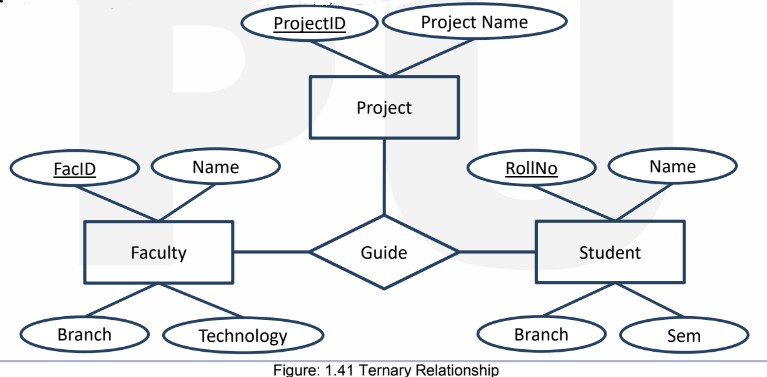

What is a Relationship Set ?
In the context of MySQL and relational databases, a "relationship set" refers to a set of relationships between two or more entity sets. These relationships describe how data in different entity sets is related or connected. Relationship sets play a fundamental role in database design and are implemented through foreign keys in database tables.
What is Degree of a Relationship Set ?
In the context of database design and the Entity-Relationship (ER) model, the "degree of a relationship set" refers to the number of entity sets (or tables) participating in a relationship set. The degree of a relationship set indicates how many entity sets are involved in the relationship and provides insights into the complexity of the relationship.
There are three common degrees of relationship sets :-
- Unary Relationship (Degree 1)
- Binary Relationship (Degree 2)
- N-nary Relationship (Degree n)
Unary Relationship (Degree 1)
- In a unary relationship, a single entity set is related to itself.
- This type of relationship is also known as a "recursive relationship" because it describes relationships within the same entity set.
- Unary relationships are used when there are relationships or associations between entities of the same type.
- Example :- In a database named "Data" there is a relation named Person which has a relation to itself as "One person is married to only one Person".

Binary Relationship (Degree 2)
- In a binary relationship, exactly two distinct entity sets are involved. This is the most common type of relationship in database design.
- Binary relationships describe associations between two different entity types or sets.
- Example :- In a university database, a binary relationship could be "Enrolled In" where "Students" (one entity set) are related to "Courses" (another entity set).

N-ary Relationship
- An n-ary relationship involves more than two entity sets.
- It describes associations between three or more entity sets.
- N-ary relationships are used when there are complex interactions or associations involving multiple entity types.
- Example :- In a university database, a ternary relationship could be "Guide" where "Faculty" (first entity set), "Student" (second entity set) and "Project" (third entity set) are interrelated to each other. 